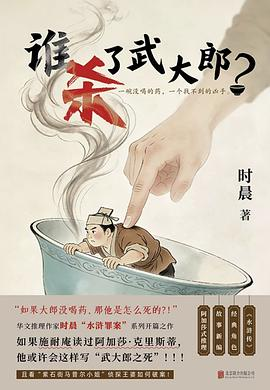

📚 本月新书
5 本 · 9月出版
1. 勇气呼唤勇气
“我们WoMen”书系： 经由我们，看见世界。 珍妮特·温特森公共随笔集 属于当代的女性平等宣言 📫百年前，英国女性走上街头，砸碎窗户、炸毁邮箱、绝食抗议，只为争取一项基本权利——投票权 📢百年后，珍妮特·温特森站在英国国会大厦，追问同一个问题：我们真的平等了吗？ 📕这是一本关于过去、现在与未来的书： 勇气会唤醒勇气，而平等，永远不是一件“已经完成”的事 🌊 编辑推荐： ◎当“淑女们”决定不“淑女”了 ——生动追忆百年前女性争取选举权的抗争历程 ★她们把锤子藏在暖手筒里，爬上国会屋顶揭瓦片。她们炸邮箱、砸橱窗、绝食抗议，被粗橡胶管强行喂食，喉咙永久损伤。她们坐牢，出狱，再坐牢。男人说她们“不成体统”，她们说：“我们本来也没打算保持体面。” ★不体面的手段换来了体面的结果——1918年部分女性获得投票权，1928年全部女性平等。没有一枪一弹，只有砸碎的...
本日新

2. 才女彻夜未眠：近代中国女性叙事文学的兴起
不能追求英雄事业的女人如何才能证明自己曾经存在？如何逃避死后千年不寤的宿命？她们于是移植了男性“文章乃千秋大业”的信念，选择寄壮志于书写，芸窗笔耕不倦，直到宵迟更深。 聚焦中国最早的女性小说家与她们的作品，探讨古代女性的存在焦虑与权力欲望，为理解传统女性的精神突围提供全新维度。王德威、李惠仪、夏晓虹一致推荐！ 1.一本讨论中国最早的女性小说家与她们的作品的文学文化史著作，填补女性叙事文学研究空白，王德威、李惠仪、夏晓虹一致推荐，王德威称其为近现代女性书写及文化研究的里程碑。 2.基于明清女性小说家的创作实践，梳理女性叙事文学传统的建立与发展。以17—18世纪在中国南方盛行的弹词小说为材料，以江南才女文化为背景，探讨明清时期女性作家在阅读、阐释与创作活动中的心理状态、思考方式，以及她们如何用文字表达自我。 3.揭示中国古代传统女性对于掌握社会权力的欲望...
本日新

封面加载失败3. 谁杀了武大郎？
武大郎死了，脸色紫黑，七窍流血！ 阳谷县人尽皆知，毒杀亲夫的凶手，必是潘金莲与西门庆。 但是这一次，故事有所不同—— 大郎没喝药！ 潘金莲手里的那包砒霜，原封未动；西门庆从未下毒。 那么，凶手就一定藏在紫石街的街坊邻里之中。 是酒店掌柜、纸马铺老板，还是银铺匠人，抑或是馉饳店老汉？ 武松外出办事，归期仅剩十日。 潘金莲、西门庆、王婆——三人被迫组成“侦探联盟”。 他们要在十天之内，抢在武松那把刀落下之前，找出那个嫁祸于人的真凶。 可越查越发现，真相远比他们想象的更加荒诞……
本日新

4. 留白
时代变化太快，我们常常感到生活过于致密。但是，这种致密究竟是生活本来的样貌，还是我们自己的感受？我们面对的许多问题，究竟是生活本身带来的，还是源于我们对确定性的执着？ 在本书中，北京大学哲学系教授程乐松从五个方面出发，重新思考在日常生活中十分重要却常被忽略的问题： 关于不确定性：肯认人的有限，警惕确定性陷阱； 关于自我与他人：在彼此之间建立开放而包容的心灵空间； 关于技术与人：将自我理解建立在厚重历史和温暖传统之上； 关于表达与理解：在众声喧嚣中，回到自身，重建表达力； 关于自我价值：用自我尊重而非“社会功利评价”来标定生活的意义。 所有的道理都是抽象的，而生活太具体了。作为一个身处局中、时常也难以自拔的人，程乐松把对这些问题的思考和分析过程摊开来。我们未必能找到问题的答案，但可以看清问题的轮廓，以及它产生的机制。看清了，我们才不至于被它裹着走。 留...
本日新

5. 沙墓
布克国际文学奖获奖作品 连续击败托卡尔丘克和约恩福瑟两位诺奖得主获得桂冠。历史上第一位获奖的南亚本土语种作家，也是印地语文学史上第一位获得顶级国际文学奖的作家。 横扫国际奖项 获得或提名英国笔会文学奖、英国沃里克女性文学奖、 美国现代语言协会文学奖、法国埃米尔・吉梅文学 奖、印度JCB文学奖、国际都柏林文学奖。 一个八十岁的女人突然决定成为一个女性主义者 过去和现在、年轻和衰老、现实和魔幻、男人和女人、印度教和伊斯兰教，它几乎囊括了所有可能发生的矛盾主题。在那个挤满了男人的国度发出自己的声音，她告诉大家“先生们，边界是用来跨域的！ 历时四年，《印地语汉语翻译教程》编写者廖波教授印地语亲译。 作者专文写给中国读者，全球独享。 超人气插画师卤猫绘制封面，内外双封面特种纸烫专金。 八十岁时，母亲变得自私起来。 好像她已经一层一层地褪去了自己的外衣，妻子的、...
本日新